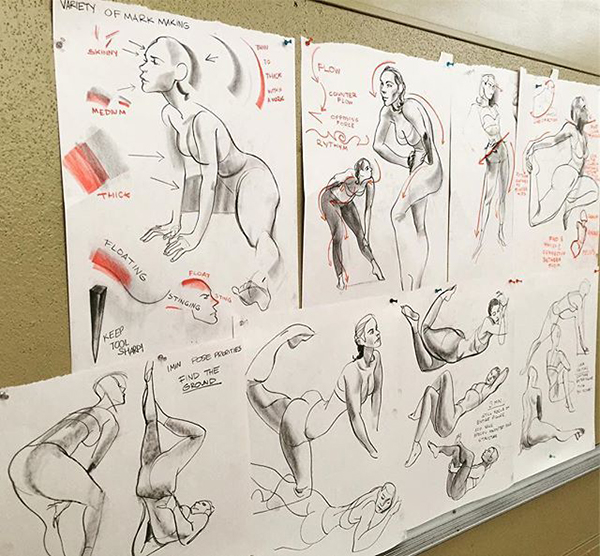
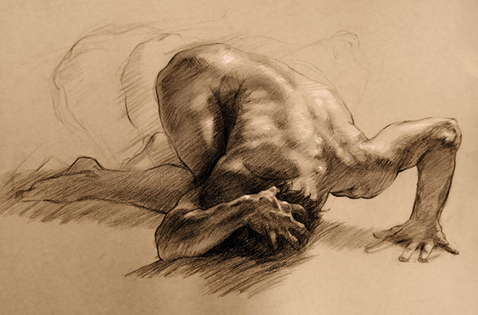
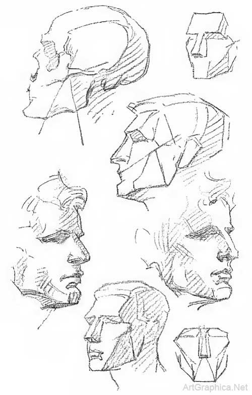

|
 George Cwirko GodyckiA fundamental skill of artists is being able to translate the human figure onto a 2D plane accurately and quickly. Figure drawing is different than drawing a human figure. It is meant to instill the skills to help you communicate a figure on a 2D plane quickly and efficiently.It needs to be noted that figure drawing involves looking at naked individuals for extended periods of time. If this is uncomfortable for you or causes an adverse reaction for you, you can always find clothed models. This site assumes you are okay with human nudity or are growing to become comfortable with it. Here is your warning: The contnent is NSFW. I will not teach you how to figure draw here, for the purposes of this assignment. That would take much too long and is often done better in an environment where feedback is available. However, there are great resources out there and if you can, I highly reccomend taking a class. One great aspect of figure drawing is that once you have the basics down, you can develop the skills on your own. You just have to look at the figure, which you know is accurate, and apply some critical thinking in order to understand the issues with your drawing and correct them the next time. I'll share with you some tips and tricks I have learned and some of the basic concepts when starting out. I'll also share some of the materials I would reccomend when getting started. Tools and MaterialsMaster Study by Julia Blattman
So, first things first, here are a few tools I would reccomend for an
individual beginging in figure drawing. Keep in mind that these are
reccomendations and that the tools you use are up to you. The important
thing is that you are studying the figure and thinking critically.
Tips When Starting OutGeorge B. Bridgman's Constructive Anatomy
Focus on the form or shapes of the figureDon't worry so much about details. you want to have an accurate representation of the figure on the page more than you want to see every hair on the head.In addition, you should not rely on hard line too much. There is an imaginary line bordering a part of a human figure and what is not that part, sure. But the form of an object is often conveyed best and simplest using the transition from light to dark. the gradation of shadow to mid-tone to light. Illustrating this throught hard line is often inefficient and does not convey the same mass and weight. That is to say the volume of the object and the part of that object where things fall. If a hard line is appropriate after you have done this, use it.
Work monochromaticallyWhen just starting out figure drawing, you should limit the information you are trying to convey. So working in a monochromatic color scheme is best.
Know and practice your fundemental art skillsProportion, perspective, basic human anatom.Setting up still lives and working from those is always a good idea when starting out. this helps you solidify your foundational artistic principals. When setting up yor still lives , you want objects to move back into space, be at strange angles, and incorporate objects that are a little weird or you feel will challenge yourself. I know it can seem boring but it is an important step to getting these fundamentals down using simpler shapes. This is a good series to start with when studying the basics of anatomy Link
Keep yourself timedDon't skimp out on this. you're trying to illustrate the human figure quickly and accurately. by setting a time limit and only focusing on what is necissary, you train your eye to pick out only the most important information to convey.
Don't work from magazines or comicsNot that these mediums arent fun, but they are often not realistic. Prioritizing design or the ideal and taking artistic liberties when it comes to anatomy.Learn the rules before you break them. Drawing from life will help you know how to illustrate the shape of a human. Once you know that, then extrapolate.
If you can, always work larger.It helps you to think in a different scale and to focus on large areas of shadow and light. You are also able to fanagle a bit more with the information on the page. It can be daunting at first but larger areas allow you to expand across the plane freely.At this point, it would be good to check out the stuff in the Resources tab. back to top Things to rememberGround The FigureMost importantly, place accurate shadow on the plane where your figure stands. otherwise they'll be floating in a void of nothing.The Environment and The Figurebe sure to pay attention to how the sitter and therefore your figure interacts with the environment around them. how do their feet plant on the ground, what happens when the sole meets the hard plane of the floor or the palm meets a wall or chair.Don't Draw Everythingif a single line will do to illustrate the point, use a single line. Learn line literacy and how to express volume with a line. curved lines, lines that go from thin to thick, and vice versa are all ways of accurately depicting the volume and weight of a figure.In addition, when you do use detail, don't detail all over. detail creates a focal point so be aware that any detail you use will draw the eye of the viewer to that spot. That detail must also be contrasted with the vague. Smudge, smear, lighten, erase, or thin lines to convey a sense of mystery to that part of the piece. emphasizing the focal point. Treat the sides of your forms differentlyTo add to the feeling of volume in a form, don't treat both sides of it the same. differ line weight and or value to emphasize the change from one side to another and pull the eye around. this also adds to the interest of the piece without becoming too detailed.Smudge, Drag, and EraseDon't be afraid to smudge, drag, or erase the lines or shapes of your drawing There are many ways that these techniques can add to the drawing. Smudging or dragging a shape or line can make it vague or create a gradient for the shadow. (when doing this, don't forget to consult the different parts of a shadow as well as what is on the figure in order to accurately depict it)Erasing can create a bit of mid-tone or light and help break a line or make it illustrate volume. Never be to attached to the drawing to erase. Words of WisdomFinally, as Mary Anne Bonjourni, my Drawing 1 - Figure Drawing course instructor has often said: "DON'T OVER WORK IT" back to top |